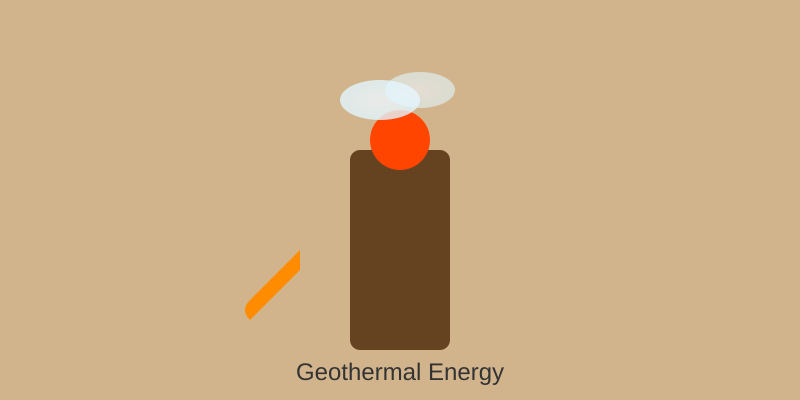

First used in Rome (hot springs). Modern: 1904 Italy Larderello plant. Iceland gets 30% electricity, 90% heating from geothermal. Enhanced Geothermal Systems (EGS) emerging.
Hot water/steam from reservoirs (100-300°C) drives turbines. Binary cycle uses lower temps. EGS fractures hot dry rock, circulates water. Direct use for heating/greenhouses.
| Year | Geothermal (TWh) | Growth |
|---|---|---|
| 2020 | 15 | - |
| 2021 | 16 | +7% |
| 2022 | 17 | +6% |
Global Capacity: 15 GW
Capacity Factor: 74% (highest)
Best Locations: Ring of Fire
EGS/supercritical tech could unlock 100x resource. Next-gen plants target $0.03/kWh. Superhot rock (500°C+) demonstrations underway. Potential 8% global electricity.